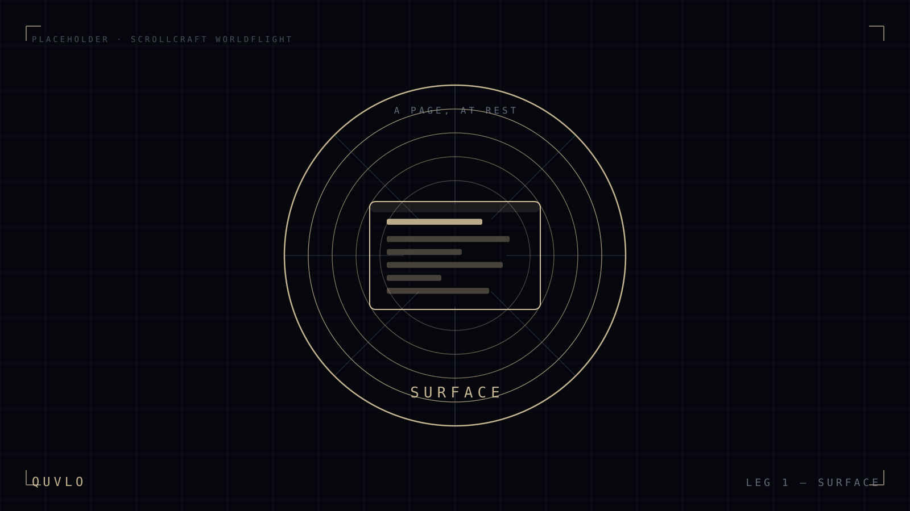
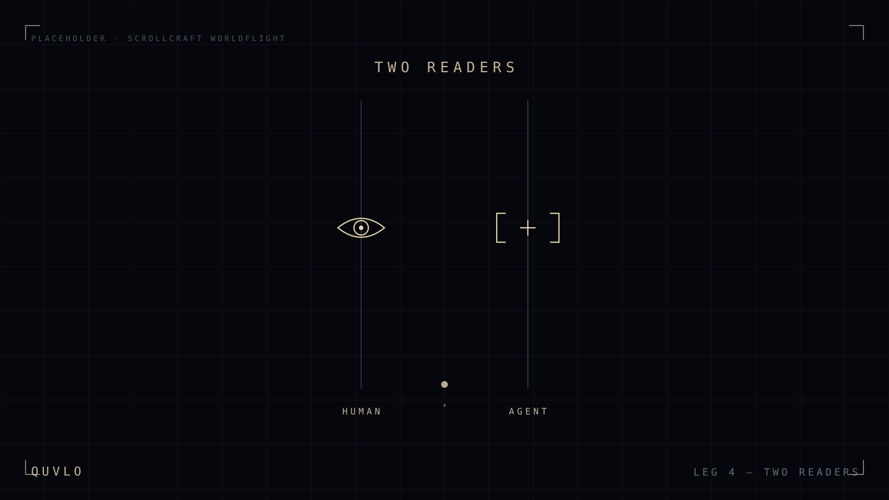
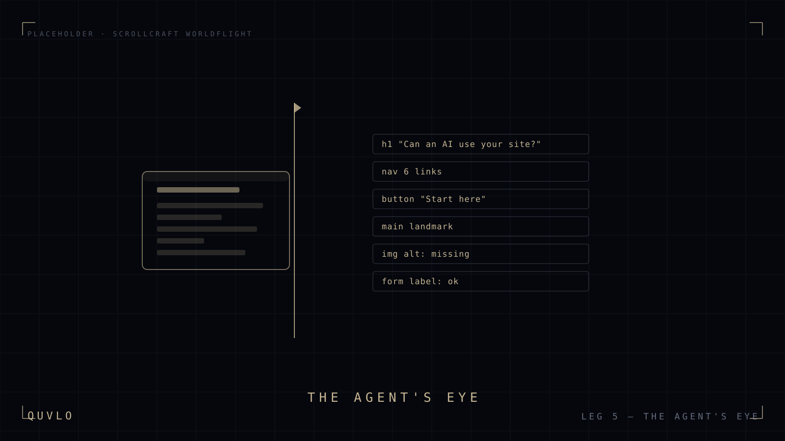
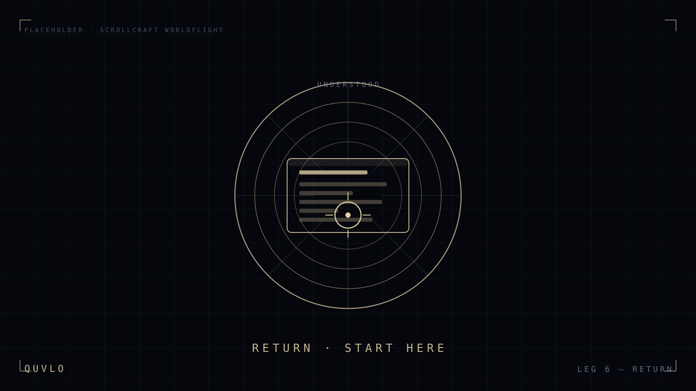

Can an AI agent actually use your website?
Most can’t. Scroll down — this is what that looks like.
A page is two things at once.
What a person sees, and what a machine reads. We’re about to fall past the first into the second.
Underneath is a structure.
Headings, landmarks, labels, links. Screen readers and AI agents travel this lattice — or get lost in it.
Two readers, one path.
A person, and a machine acting for one — a screen reader, an assistant, a search crawler. Your site has to work for both, or it quietly loses one.
This is your page, as an agent reads it.
Not a mock-up. The panel below is this very page’s accessibility tree, read live from the document you’re scrolling. A well-built page reads clean here. Most don’t.
- reading…
- —
Every Quvlo build is measured against exactly this reading.
Quvlo builds sites both can use.
People and machines, on the same page — accessible and agent-ready by default.